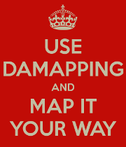

DAMapping is structured as stack of components, complementary and yet individually usable, designed to power the developer who writes or maintain object mapping code in Java.

Based on the principles that object mapping should be code and that the developer should own it, DAMapping provides a way of doing object mapping in pure Java inside your own code.
more details on the principles on DAMapping here
With DAMapping

- structure your object mapping code with the ultra light and flexible DAMapping framework
- write efficient, readable and good-looking object mapping code with the DAMapping library
- generate type-to-type and object-tree to object-tree mappings with the DAMapping code generator
- use all these components in a few clicks directly in your IDE with the DAMapping IDE plugins
Short-term benefits of DAMapping
- DAMapping can do it all for you but then hand it over to you: you own the code
- DAMapping is fully statically typed: it’s pure Java code everywhere (no property names as String!), if it compiles, you know it runs
- DAMapping does not limit how object mapping is done: it creates object mapping code or gives you utilities to write it, in both cases the code is yours, you can handle any case, just write it
- DAMapping is open: it does not enforce any vision of how object mapping should be done, even the DAMapping generator can be configured, but it does provide good defaults
- DAMapping is flexible: you can use the whole stack (much like any other object mapping tool) or you can use any combination of its components
Long-term benefits of DAMapping
Where DAMapping definitely stands out is on the long term.
Doing pure Java object mapping code and as part of the developer’s code has many benefits.
- it’s stable: it’s in your VCS, it won’t change (even if you update DAMapping) unless you say it should and anyway will know when and (hopefully) why
- it’s safe because it is really fully statically typed
- there is no need to know DAMapping to understand and maintain your object mappings, it’s plain Java code!
- you can refactor your classes (rename properties, methods, types, …), your object mapping code will stay up-to-date (depending on your IDE – use IntelliJ IDEA – free ad) and if there is something wrong, the compiler will tell you
- you can inspect the code, you know when and how things are mapped, there is no magic
- you get comprehensive stack traces and you can debug it all
Documentation
Check out the documentation to get a better understanding of DAMapping, how it works and how to use it:
- DAMapping
- DAMapping framework
License
DAMapping is open source, licensed under Apache Licence 2.0, and all sources are available on GitHub.
Contributors are welcome, any feedback as well
Development status
| Component | Status | Source |
|---|---|---|
| framework | beta release is almost there: object tree mapping support, CDI integration | [Github]  |
| library | dev will start soon, working on the road map for now | [Github]  |
| code generator | dev has not started yet, working on high level specifications | |
| IntelliJ IDEA plugin | plugin is in alpha stage (not released yet), it supports generated class integration | [Github] |
| other plugins | dev not started |